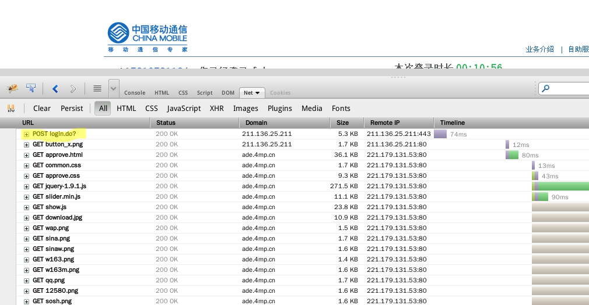
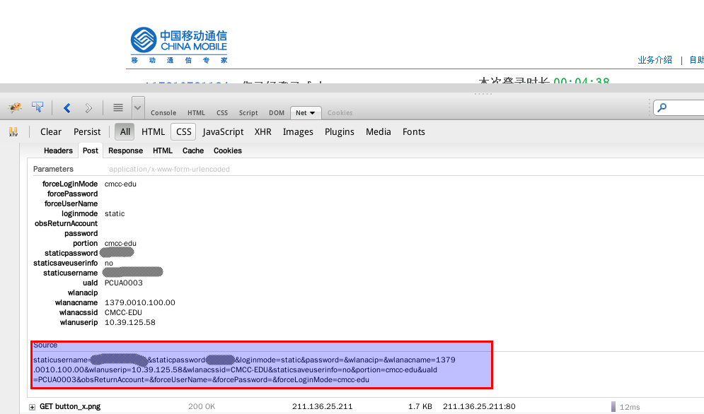
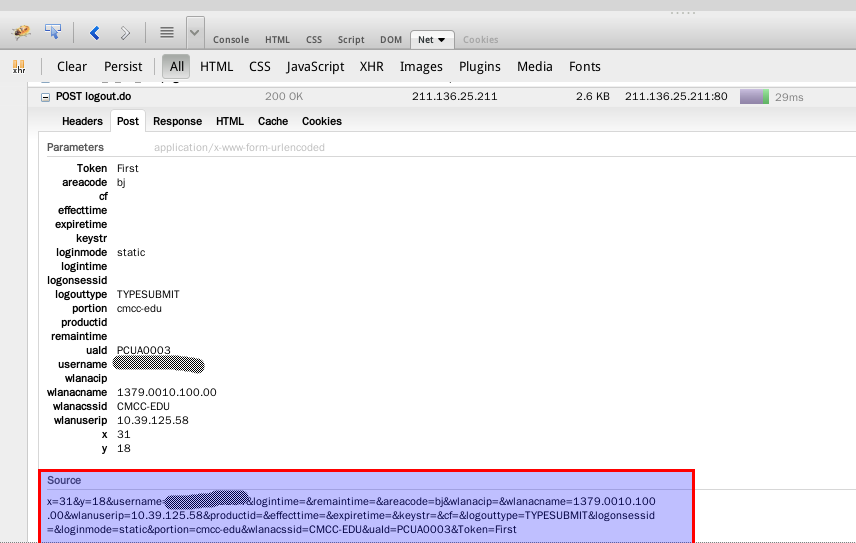
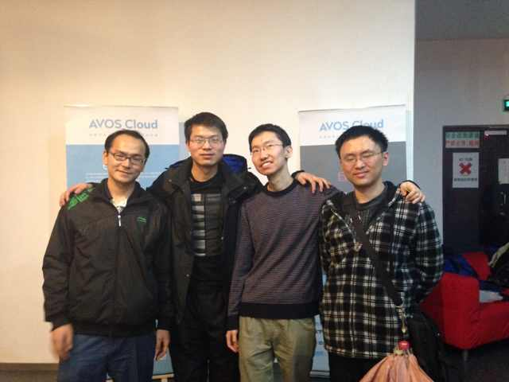

Django和Flask如何部署到Nginx+uWSGI组合上
Django 或 Flask 在本机利用各自自带的开发服务器写得差不多时，就该考虑将 程序部署到服务器上了，官方文档都有相应的指导，不过一来好多 E 文，虽说慢 慢看也能看出名堂，但发现自己 E 文还是没有达到随心所欲的境界，中文文档不 管多么长一大段，总能刷一眼就将文章大概和关键词抓住，而 E 文却得细细看才 能领悟内容，所以写这篇博客作为备忘，也希望能帮到有需要的同学，另外官方 文档有些细节可能并没有涉及。
django
django 在开发时一般在 settings.py 中将 debug 选项打开，方便调试。其
模板和静态文件一般都放在相应 app 目录里面。例如在 venv 目录里用
django-admin.py startproject mysite 创建项目 mysite ，然后用
django-admin.py startapp app1 创建应用 app1 ，则相应的模板和静态
文件目录为 ~/venv/mysite/app1/templates/app1/ 和
~/venv/mysite/app1/static/app1/ ，这个看起来会比较怪，你会想
django 为什么这么 SB 的在每个应用下面还创建一个应用的子目录呢，因为
django会默认到每个应用的 templates 目录下查找模板，如果你的应用
app1 和app2 都有一个相同名字的模板，比如 header.html ，django 就没
法判断该用哪个模板渲染，所以比较好的方法是用模板命名空间(template
namespacing)，即在每个模板前加上应用名作为命名空间，如 {% extends
'app1/header.html' %} ，静态文件也是同样的道理。
当采用其它服务器运行 django 应用时，django 就不再 serve 静态文件了，
即使开启了 debug，因为这时 django 会认为你有生产服务器了，不需要我
这个破开发服务器 server 静态文件了，所以你必须自己配置服务器
server 静态文件，但正如前面说的，django 的静态文件是分散在各个 app
里面的，该怎么才能更加方便的让 nginx,apache 等托管这些分散的静态文
件呢？在 nginx,apache 的配置文件里写正则表达式去匹配？No,no！这里
django manage.py 里提供了一个方便的命令行工具 collectstatic ，字面
意思就是收集静态文件，运行 python manage.py collectstatic 会将分
散的静态文件收集起来，不过运行这个命令前需要在 settings.py 中指定
收集到哪， STATIC_ROOT = os.path.join(BASE_DIR, "static/") 这样设
置后会将所有用到的静态文件都收集到 static 目录下，而且是按 app 分
子目录的，如 static/admin, static/app1, static/app2，其实说白了这条
命令就是执行了一系列的 cp 命令。然后就可以通过配置 nginx,apache 轻
松地托管静态文件了。很多新手在使用 django 时都有可能会碰到这个问题：
用 nginx 或 apache 部署 django 网站时 admin 页面的静态文件丢失了，
然后不同地方会告诉你不同的解决方案，虽说都能起作用，不过用
collectstatic 的方式是最容易也最符合 django 之道的，另外说一句，既
然用了 django 框架就尽量按 django 方式去处理问题，这样会变得很轻松。
Flask
相比 Django，Flask 小项目坑就比较少了，因为一般都是直接将所有静态文 件扔到一个 static 目录下面，配置 Nginx 就方便多了，不过对于 Flask 大 项目来说，一般都是推荐用 Blueprints 由于本人还没有用 Flask 做过大项 目，所以具体情况不太了解，后面只给出 Flask 小项目的（Nginx+uWSGI）的 配置
uWSGI
WSGI(python web server gateway interface) 是 python 界的 web 标准接 口，维基上的解释“WSGI是作为Web服务器与Web应用程序或应用框架之间的一 种低级别的接口，以提升可移植Web应用开发的共同点”，因为以前python 的 web 应用程序都是针对某种接口设计的，选择某种框架意味着必须使用某种特 定的服务器。有了 WSGI 标准（2003年）后，所有应用只要遵循这个接口协议 就可以使用任何服务器。所以现在很少看到有 python 用 cgi,fastcgi,modpython 的，基本统一在 WSGI 标准下。uWSGI 是 wsgi 的 一种高性能的实现，有很多文章对 uWSGI,fastcgi,gunicorn 等的测评都表明 uWSGI 的性能很强悍（完秒其余）。这个 uWSGI 就不仅仅是服务于python 程 序了，因为在 python 之后其它脚本语言也都有相应的 WSGI 版本。不同语言 使用 uWSGI 服务器，只需相应的插件就行。
安装使用 uWSGI 也是相当容易的，直接用相应发行版的 package manager 安
装 uwsgi 就行，不过如果不是用 python 的包管理器安装的，则对于python
web 应用来说还需要安装 python 的相应插件 uwsgi-plugin-python 。很
多人跟着某些博客中的教程使用 uwsgi 时都会碰到 uwsgi: unrecognized
option ... ，如 --module , --wsgi-file , --callable 等，最开
始我也碰到这样的问题， uwsgi --help 得到一大堆帮助信息（吐槽下，
uWSGI 用户接口方面太不友好了，输出这么一大堆信息会吓着初学者，而且也
很难从中找到需要的帮助信息，要是你用管道加 less ，那我就无话可说了），
找了下发现的确没有这些选项，第一反应是版本对不上，后来发现相同版本也
会遇到这个问题，然后才找到问题的根源，需要在上面那些未识别选项前加上
--plugin python 来告诉 uWSGI 我在使用 python 插件，后面那些选项你
用python 插件去解析。
老用那一长串命令选项当然很不爽，uWSGI 允许你用多种文件格式 （xml,ini,json,yaml）将上述命令行选项保存起来，然后用相应的选项 (-x,-i,-j,-y)告诉 uWSGI 你的配置文件格式。一个典型的 xml 格式的配置 文件如下：
<uwsgi> <plugin>python</plugin> <socket>127.0.0.1:8000</socket> <chdir>/home/yufeng/venv/mysite</chdir> <home>/home/yufeng/venv</home> <module>django_wsgi</module> <processes>4</processes> <daemonize>uwsgi.log</daemonize> </uwsgi>
其中 module 是 djangowsgi.py 文件，该文件与 manage.py 在同一目录， 文件内容如下：
#!/usr/bin/python import os os.environ.setdefault("DJANGO_SETTINGS_MODULE", "mysite.settings") from django.core.handlers.wsgi import WSGIHandler application = WSGIHandler()
Flask 的 uWSGI 配置文件（ini 版）如下：
[uwsgi] plugins=python vhost=true socket=127.0.0.1:9001
nginx
据说这货比 Apache 性能更强悍，这个对于我这种低端用户来说意义不大， 而且也不能跟风评论。不过轻量级这个还是可以直观的看出端倪的，两者最 新稳定版本源码文件： nginx-1.4.7.tar.gz 是751k，而 httpd-2.2.26.tar.gz 是6.9MB，几乎有10倍的差距，虽说最终编译运行的 程序差别不一定是这么大，但 nginx 轻量级还是无疑的。
废话少说，直接看如何配置 nginx 吧。主配置文件是
/etc/nginx/ngnix.conf ，deb 系发行版在配置目录下建了两个目录
sites-available 和 sites-enabled ，这样的确会方便很多。
nginx.conf 中配置详细解释可以戳 这里 ，讲解的非常详细，这里就不再
啰嗦了。为了保证不出现 403 Forbidden ，一般有两种方案：把项目的
owner 改为 www-data(deb系下) chown www-data:www-data
mysite/static ；将 nginx.conf 中的 user 改为你当前用户。下面贴上根
据上面 Django 和 Flask 的 uWSGI 配置相应的 nginx 配置，都是假设项目
在 RaspberryPi 上。
Django:
user pi;
work_processes 2;
http {
upstream django {
server 127.0.0.1:8001;
}
server {
listen 8000;
server_name localhost;
location /static/ {
alias /home/pi/venv/mysite/static/;
}
location /media/ {
alias /home/pi/venv/mysite/media/;
}
location / {
uwsgi_pass django;
include uwsgi_params;
}
}
}
Flask:
user pi; work_processes 2; server { listen 5000; server_name hostname; location /static { alias /home/pi/venv/mysite/static; } location / { include uwsgi_params; uwsgi_pass 127.0.0.1:9001; uwsgi_param UWSGI_PYHOME /home/pi/venv; uwsgi_param UWSGI_CHDIR /home/pi/venv/mysite; uwsgi_param UWSGI_MODULE mysite; uwsgi_param UWSGI_CALLABLE app; } }
CMCC-EDU 简易客户端
上周抽空写了个 Python 版的 CMCC-EDU 客户端，没什么技术含量，不过作为本 人在 github 上的第一个实际有意义的项目，还是在这里记录一下。
关于为什么写这个客户端，在项目的 README 中已经简要介绍了，这里再次吐槽 一下 CMCC，网页登录界面写得太烂，每次跳转到登录界面后浏览器都不能自动把 所有内容加载，不知道使用了什么奇葩技术，各大浏览器都将那段代码识别为不 安全脚本，每次必须手动加载，而且尽管浏览器提示保存密码但却总是不能保存 密码，所以如果用网页登录的话每次都要手动点击浏览器角上的加载不安全脚本， 并且每次都要输入密码，除非选择了自动登录。另外比较烦的是登录成功后不能 关闭那个页面，否则就找不到下线页面了，CMCC 你就不能提供一个统一的下线页 面吗？虽说关机或断网一段时间（据说是15分钟）后能够自动下线，但毕竟是按 时间计费的，每次用这种暴力下线方式都会浪费一段时间，心里想着总是不爽的。 总之，对于一个正常的用户（或者至少一个 Geek 用户）这些都是让人无法忍受 的，不过 CMCC-EDU 继续给用户每个月免费120小时还是值得点赞的。
有了不满就动手改造之，作为 coder 的好处就是对程序软件不满就可以自己动手 hack 一个符合自己需求的。上 Python 呗
分析
- 加载 CMCC-EDU 登录的完整页面，查找登录按钮点击后执行的操作
<div id="Wp_submit" class="Wp_submit" style="cursor:pointer;" onclick="checkField()"></div>
如上，
onclick只是调用一段 js 对用户输入信息进行有效性检查，理 论上应该是将用户信息用 post 方法提交到服务器，这样才会比较安全。 继续查找有没有 post 方法的表单，发现如下面一行<form id="Wlan_Login" action="https://211.136.25.211:443/login.do?" method="post" name="login">
That's it! 这个 form 下包括用户输入的信息和一些隐藏的信息（即用户 通过WIFI获得的AC相关的信息），要实现登录就得把这些信息 post 到上 面的
action那个 URL 中去。然后我们尝试登录一次，看看数据是怎样 post 到服务器上去的。登录成功后打开 Firebug，查看 Net ，点开POST login.do?，然后再看里面的 Post ，其中 Source 就是我们提交 到服务器上的信息。
Figure 1: Firebug

Figure 2: Login
- 同样方法分析下线操作，下线之后就可以查看 Firebug Net 里的
POST logout.do了，同样 Source 里的信息就是我们要提交的信息，可以发现 登录和下线的服务器是没有变的
Figure 3: Logout
- 有了上述分析就可以用 python 将 Source 里的信息 post 到服务器上试
试登录和下线了，Python 标准库中 urllib(2) 和 httplib 可以用来请求
网页，不过 API 调用很复杂，网上有一个好用的第三方 http 库：
requests ，口号是： HTTP for Humans 。对比一下 urllib 和 requests，发
现 requests 真的是 For Humans，API 调用非常简单直接，很符合
python 哲学： Simple is better than complex. Readability counts .
安装之：
pip install requests --userimport requests source = 'Copied From Firebug-> Net-> POST login.do?-> Post-> Source' url = 'Copied form-> action' # see above <form id="Wlan_Login" action="xxx" ...> r = requests.post(url+'&'+source)
用上述代码在 python 解释器中运行一下，然后打开网页看看是否已经登 录，如果登录成功的话，再试试下面的下线操作
source = 'Copied From Firebug-> Net-> POST logout-> Post-> Source' url = url.replace('login', 'logout') r = request.post(url+'&'+source)
不出意外的话，上面登录和下线操作都可以成功，下一步就是将上面的手 动 Copy 变成自动完成
- 提取登录信息，第1步中已经找到这些信息在那个 form 中，通过程序将其 提取出来就可以替代手工 copy 操作，可以通过 HTMLParser 库或 re 库 完成，不过 CMCC 为我们提供了另一种方案。不知你有没有注意到打开网 页后跳转到的登录页面的 URL，它已经包含我们登录所需的信息了，这位 我们直接解析这个 URL 比从整个网页中提取信息要方便多了，你可能会说 Source 里有好长一段数据呢，URL 里并不包含所有这些数据啊，但是通过 尝试你会发现其它 URL 中没有的信息都是服务器默认的或者对某种登录方 式而言是固定的，所以服务器真正需要的信息只有 staticusername, staticpassword, wlanacname, wlanuserip, loginmode, wlanacssid 这 几个量，而上面所需的 url 也包含在重定向的 URL 中
实现
有了上述分析，实现起来就很 Easy 了，具体实现请直接看 代码 ，这里就不 再赘述了。通过上面的分析基本上对一些网页登录操作过程就清楚了，所以不 要再抱怨你们校园网没有 Linux 客户端了，只要提供网页登录，根据上面的 分析赶紧自己 hack 一个客户端，即使是在控制台下也可以轻松实现登录，只 要你愿意，完全可以实现开机自动登录你们的校园网
Todo
- 希望以后有空将这个客户端扩展到能支持 CMCC
- 考虑用 python 标准库 urllib(2) 和 httplib 重新实现，使安装使用更容 易
- 加入图形界面，顺便用 py2exe 打包给 Windows 用户使用
AVOS Cloud Hackathon 活动
从 SegmentFault 侧栏广告位看到 AVOS Cloud 在这两天举行，当时看 V2EX 上 没人发相关的信息，于是就把这条贴了上去，顺便征询 V 友意见，有前辈鼓励和 一批 V 友回复，头脑发热就报了名，同时征了几个队友，好像大家都比较酱油， 本着去看看学习学习的态度去参加，结果有个哥们周五中午突然回复有事不能去 了，于是乎只剩两个人了。
昨天大清早的爬起来坐班车，一起进城的还有同学和他基友去天安门玩，和一个 同学送妹子回城，只有我一个屌丝是孤身一人坐2小时班车去参加 hackathon。去 了之后临时又找了3个哥们加入，一个搞 Unity 游戏开发的，一个产品经理，还 有一个Java 员，加上和我一起去的 V 友是做产品设计的，本人算一个 Python 员吧，可以看出真正能写 coding 的也就勉强算3个，而且没有人会做移动应用。 就这么临时凑了一个团队，idea 也没有提前想好，临时讨论并否定了一大堆，最 终选择了做一个基于地理位置的陌生人交流应用。
当然类似的应用比较多，但我们主要定位在地理位置和陌生人，想要实现的功能 就是：到达某个地方后，打开应用会自动加载该位置处别人的留言，离开这个位 置后这些消息都不会显示在应用中，所以交流基本上都是陌生人之间的，一个地 理位置基本上能够给用户提供一个共同话题，当然如果做成成品，可以给用户提 供一个继续交流的机会，但不会在这个应用的用户系统里，而是通过提供一个指 向其它社交应用的链接，因为如果在这款应用中提供好友功能，基本上就会淡化 我们这个应用的核心功能和定位，我们应当保持这个应用的匿名性和地理性。
Idea 有了，接下来就是实现了。对于我们这样一款应用来说最好的呈现方式是以 移动客户端形式提供给用户，但从我们团队组成来说，基本没有可能实现或在这 两天内实现移动客户端，只能选择写一个网页应用，对我们3个coder来说，HTML 网页应用还可以写写，但毕竟都不是专业的网页开发工程师，也只能将就写写， 其中的曲折这里就略去 xx 字，而且更糟糕（抑或是”更好“）的是 AVOS Cloud 基本将服务器端都帮我们部署好了，所以我们这些对后台熟悉的 coder “几乎没有”用武之地，前端都是我们不太擅长的（囧），但到这个份上也只能 操刀上了。
昨天基本把设计图和流程理清了，并且我和 Java 员熟悉了服务器端相关的数据
和部署方法，今天完善功能。虽说上面略去 xx 字的曲折过程，但有一点还是要
提一下，就是坑爹的 navigator.geolocation.getCurrentPosition 函数非常
不靠谱，尤其在室内经常无法获取到地理位置信息，经常出现 error code 3，也
就是超时，这个 bug 折腾了我好久时间，最终在 AVOS Cloud 技术人员的建议下
将其写死在程序里，在 Demo 里模拟一下就行。第2天做产品设计的队员回家了，
所以直接导致我们最终的 Demo 比较丑。最后好说歹说算是把该有的功能模拟出
来了，结果出现一个非常不和谐的事情：那位搞 Unity 游戏开发的大哥和那位产
品经理大哥争着要去做 Demo 演示，而且如果两个人都上的话又非要争第一个讲，
甚至说出互请对方走人的话，把我惹火了直接起来教训了他们两人一顿，本来就
一个比较搓的应用还在那争了大半个小时去展示，说实话我真的是 feel shame
about them. 这是参加这次 Hackathon 让我最不爽的地方，此处打住。
放张团队合影照权作纪念

说些收获吧，这次 Hackathon 让我在实际项目中应用了 git 工具，对版本控制 软件的工作流程更加熟悉了，另外对于一款产品从 Idea 到最终产品整个过程有 了亲身体验认识，以前都是一个人闭门造车式的写程序(当然是物理的，因为对于 虚拟的互联网还是 open 的)。还有一点就是从最终的产品展示看到很多优秀的 Idea 和产品设计。最后吐槽和八卦一下：AVOS Cloud 的后台管理以及 Demo 对 Firefox 兼容性很糟糕；最终的一等将是一对情侣开发的一款约炮应用“咱俩”(偷 笑)。
用 git 作为 nikola 博客发布工具
前面已经介绍过用 Nikola 和 Emacs 的 org-mode 写博客，这篇文章讲讲如何部 署发布博客。其实 Nikola 文档中 Deployment 已经讲过，还给了一个链接 git-website-howto 一步步介绍怎么通过 git 部署发布一个网站。本文的目的是 给自己写一个备忘，同时也方便一些国内 nikola 或类似静态博客使用者作参考。
之前准备在 Digitalocean 的 VPS 上直接写博客的，然后将 Nikola 生成的静态 文件（output）直接软链接到 Nginx 的 root 目录去，试过这种方案结果老提示 403 错误，也尝试过直接将 root 设为 output 目录，老是报 403 错误，改过 output 目录权限还是 403 错误，就没再折腾了，应该是我对 Nginx 的机制没搞 清楚造成的，有时间要好好学习一下 Nginx 的配置。而且直接在 VPS 上编辑文 档不太方便，所以就放弃了这种方案，所以就有了我现在的博客。
本地库(local repository)
本地的库位于 output 目录，通过 nikola init myblogs 生成的项目目录最
开始是不包含 output 目录的，所以在初始化项目后需要在项目目录
myblogs 中新建一个 output 目录，然后在这个目录中执行 git 初始化操作。
下面是这段的相关命令操作
nikola init myblogs mkdir myblogs/output && cd myblogs/output git init
然后开始写博客 nikola new_post ，生成博客 nikola build ，
output 目录里就有了新博客，把新增博客添加到 git 版本控制之中，然后
提交，当然这是提交到本地，我们还没有设置远程服务器。下面是这段的相关
命令流程
nikola new_po # edit your blogs nikola build nikola serve # preview blog locally git add * # in output directory git commit -a -m "My first post"
远程库(remote repository)
远程库的名字随便取，与本地库没有关系。应该用 git 初始化为一个裸(bare)库。
ssh remote_username@remote_host mkdir website.git && cd website.git git init --bare
然后写一个钩子脚本(hook script)，该脚本在同步成功后执行，用于把 push 上来的文件检出到网页服务器的 DocumentRoot ，即 Nginx 的 root 目录。
mkdir -p /srv/http/blogs vim ~/website.git/hooks/post-receive chmod +x ~/website.git/hooks/post-receive # add following script to post-receive file #!/bin/sh git_work_tree=/srv/http/blogs git checkout -f
连接本地库和远程库
首先在本机生成 ssh 的公钥，然后将公钥上传到远程服务器，添加该公钥为受 信任，这样本机通过 ssh 连接远程服务器就不需要再输入密码了。然后将远程 库添加到本地，最后就可以 push 同步博客到 VPS 了，而且会自动在服务器端 部署好，这样一条 push 命令就发布了你的博客。
ssh-keygen -t rsa scp .ssh/id_rsa.pub remote_username@remote_host: ssh remote_username@remote_host mkdir -p ~/.ssh mv ~/id_rsa.pub ~/.ssh/authorized_keys chmod 600 ~/.ssh/authorized_keys exit cd myblogs/output git remote add blog ssh://remote_username@remote_host/home/remote_username/website.git git push blog +master:refs/heads/master
以后发布新博客只需要 git push blog 就可以了。前面几篇博客到本篇博客
介绍了用 Nikola 和 orgmode 写静态博客，并用 git 工具发布博客的整个流
程，可以看出整个过程比较简单，而且写起 orgmode 文件也很愉快，So
happy hacking and blogging!（以后有空会再把这个过程进一步简化，使得在
Emacs 里实现一键发布）
测试
字体标记
mono, bold ，/italic/ , verbatim , underlined
公式和代码
- 公式
orgmode 支持 Latex 的公式书写，\( E=mc^2 \)，可以直接使用 latex 公 式环境
\begin{equation} x = \sqrt{b} \end{equation} - 希腊字母
可直接使用而且不需要使用 Latex 环境，直接在希腊字母前加反斜杠，如 α β
- 上标和下标
与 Latex 里一样，如 10m3, CO2
- 插入代码
# 安装 Nikola 和 Orgmode 插件 pip install nikola --user nikola init myblogs cd myblogs nikola install_plugin orgmode
支持各种程序设计语言，下面是 Python 的 Hello-world 程序
#!/usr/bin/env python print "Hello,world!"
C 语言的 Hello-world 程序
链接，表格
点这里 访问我的主页
插入表格也是极其方便的
| Name | Phone | Age | Country | gender |
|---|---|---|---|---|
| Peter | 1234 | 15 | America | male |
| Anna | 3142 | 22 | France | female |